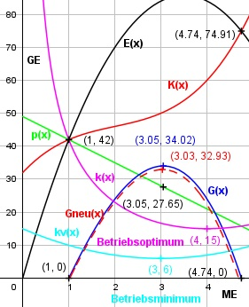

Aufgabe 100 Ein Monopolist hat eine Preisabsatzfunktion p(x) = - 7x + 49 und eine Kostenfunktion K(x) = x3 - 6x2 + 15x + 32. a) Wo liegt die langfristige Preisuntergrenze? b) Wo liegt die kurzfristige Preisuntergrenze? c) Wo liegt die Gewinnzone? d) Welche Koordinaten hat der Cournotsche Punkt? Der Betrieb hat 8% höhere Lohnkosten. Die Lohnkosten machen 75% der variablen Kosten aus. e) Wie hoch ist jetzt der Gesamtgewinn? f) Wie hoch sind die Durchschnittskosten ud der Durchschnittsgewinn? a) Langfristige Preisuntergrenze entspricht dem Betriebsoptimum. K(x) x3 - 6x2 + 15x + 32 k(x) = ------ = --------------------- x x 32 k(x) = x2 - 6x + 15 + ---- x 32 k'(x) = 2x - 6 - ---- x2 64 k''(x) = 2 + ---- > 0 für alle x > 0 --> Tiefpunkt x3 32 2x - 6 - ---- = 0 |*x2 x2 2x3 - 6x2 - 32 = 0 Durch Probieren gefunden x1 = 4 Hornerschema: 2 -6 0 -32 x1 = 4 8 8 32 -------------------------- 2 2 8 0 Polynomdivision: 2x3 - 6x2 - 32 : (x - 4) = 2x2 + 2x + 8 -(2x3 - 8x2) ------------ 2x2 - 32 -(2x2 - 8x) ----------- 8x - 32 -(8x - 32) ---------- 0 2x2 + 2x + 8 = 0|:2 x2 + x + 4 = 0 p, q - Formel: p = 1, q = 4 x2,3 = x2,3 = -0,5 ± x2,3 = -0,5 ± --> keine weiteren Nullstellen Die langfristige Preisuntergrenze liegt bei 4 ME. b) Kurzfristige Preisuntergrenze entspricht dem Betriebsminimum. Kv(x) x3 - 6x2 + 15x kv(x) = ------- = ---------------- = x2 - 6x + 15 x x k'v(x) = 2x - 6 k''v(x) = 2 > 0 --> Tiefpunkt 2x - 6 = 0 |+6 2x = 6 | :2 x = 3 ME Die kurzfristige Preisuntergrenze liegt bei 3 ME. c) E(x) = p(x) * x = (-7x + 49) * x = - 7x2 + 49x G(x) = - 7x2 + 49x - (x3 - 6x2 + 15x + 32) G(x) = - x3 - x2 + 34x - 32 G'(x) = - 3x2 - 2x + 34 G''(x) = -6x - 2 < 0 für alle x > 0 --> Hochpunkt -x3 - x2 + 34x - 32 = 0 | *(-1) x3 + x2 - 34x + 32 = 0 Durch Probieren gefunden x1 = 1 Hornerschema: 1 1 -34 32 x1 = 1 1 2 -32 -------------------------- 1 2 -32 0 Polynomdivision: x3 + x2 - 34x + 32 : (x - 1) = x2 + 2x - 32 -(x3 - x2) ----------- 2x2 - 34x + 32 -(2x2 - 2x) ------------ -32x + 32 -(-32x + 32) ------------- 0 x2 + 2x - 32 = 0 p, q - Formel: p = 2, q = -32 x2,3 = x2,3 = -1 ± x2,3 = -1 ± x2,3 = -1 ± 5,74 x2 = 4,74 ME = Gewinngrenze x1 = 1 ME = Gewinnschwelle x3 = -6,74 keine Lösung d) Der Cournotsche Punkt gibt an, bei welcher Menge und welchem Preis ein Monopolist maximalen Gewinn macht. G'(x) = - 3x2 - 2x + 34 -3x2 - 2x + 34 = 0 A, B, C - Formel: A = -3, B = -2, C = 34 x1,2 = x1,2 = x1,2 = 2 ± 20,3 x1,2 = ---------- -6 x1 = 3.05 ME p(3,05) = -7 * 3,05 + 49 = 27,65 GE/ME x2 = - 3,73, liegt außerhalb der Gewinnzone C(3,05|27,65) e) Lohnkosten = 75% der variablen Kosten = 0,75 * Kv(x) = 0,75 * (x3 - 6x2 + 15x) Lohnkosten nach der Lohnsteigerung um 8% = = 1,08 * 0,75 * Kv(x) = 1,08 * 0,75 * (x3 - 6x2 + 15x) Variable Kosten nach der Lohnsteigerung = = 1,08 * 0,75 * Kv(x) + 0,25 * Kv(x) = 1,08 * 0,75 * (x3 - 6x2 + 15x) + + 0,25 * (x3 - 6x2 + 15x) = 1,06 * (x3 - 6x2 + 15x) Kneu(x) = 1,06 * (x3 - 6x2 + 15x) + 32 Kneu(x) = 1,06x3 - 6,36x2 + 15,9x + 32 Gneu(x) = -7x2 + 49x - - (1,06x3 - 6,36x2 + 15,9x + 32) Gneu(x) = - 1,06x3 - 0,64x2 + 33,1x - 32 G'neu(x) = - 3,18x2 - 1,28x + 33,1 G''neu(x) = -6,36x - 1,28 < 0 für alle x > 0 --> Hochpunkt -3,18x2 - 1,28x + 33,1 = 0 A, B, C - Formel: A = -3,18, B = -1,28, C = 33,1 x1,2 = x1,2 = x1,2 = 1,28 ± 20,56 x1,2 = -------------- -6,36 x1 = 3,03 ME Gneu(3,03) = -1,06 * 3,033 - 0,64 * 3,032 + + 33,1 * 3,03 - 32 = 32,93 GE x2 = -3,43, liegt außerhalb der Gewinnzone Der maximale Gewinn nach der Lohnsteigerung beträgt 32,93 GE. f) Durchschnittskosten nach der Lohnsteigerung: Kneu(3,03) ---------- = 3,03 1,06*(3,033 - 6,36*3,032 + 15,9*3,30 + 32) GE = ---------------------------------------------- 3,03 ME = 16,92 GE/ME Durchschnittsgewinn nach der Lohnsteigerung: Gneu(3,03) 32,93 GE --------- = ---------- = 10,87 GE/ME 3,03 3,03 ME
